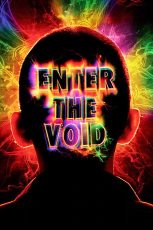

#7121 Enter the Void
 
 IMDB-Wertung: 7.3 / 10
IMDB-Wertung: 7.3 / 10  Metascore: 0
Metascore: 0 
Oscar verbindet eine besonders intensive Beziehung mit seiner Schwester Linda, seitdem sie als Kinder miterleben mussten, wie ihre Eltern bei einem Autounfall ums Leben kamen. Gemeinsam schlagen sie sich durch die Halbwelt von Tokio. Er hält sich mit kleinen Drogendeals über Wasser, sie tritt als Stripperin auf und lässt sich mit zweifelhaften Typen ein. Bei einer Razzia gerät Oscar ins Visier der Polizei. Bei der Flucht wird er niedergeschossen. Sein Körper liegt im Sterben, doch seine Seele weigert sich, aus der Welt der Lebenden zu scheiden. Gerade erst hatte Oscar seiner Schwester hoch und heilig versprochen, sie niemals zu verlassen. Und so wandert sein Geist durch die neongleißende Stadt - rastlos, ruhelos, immer auf der Suche. Oscars Visionen werden immer grotesker und bizarrer, seine Seele drängt ins Jenseits. Vergangenheit, Gegenwart und Zukunft verschmelzen zu einem halluzinatorischen Mahlstrom ...
Jahr: 2009
Dauer: 161 Minuten
FSK: 18
Land: Frankreich Studio: BoidTonspuren: DTS - ,
Untertitel:
Auflösung: 1080p (1920x824) Größe: 14131 MB
Genre: Drama, Fantasy
Regisseur: Gaspar Noé
Drehbuch: Gaspar Noé
Soundtrack:
Darsteller:
 Paz de la Huerta als Linda
Paz de la Huerta als Linda- Olly Alexander als Victor
 Emily Alyn Lind als Little Linda
Emily Alyn Lind als Little Linda- Gaspar Noé als Man in nightclub , uncredited
- Nathaniel Brown als Oscar
- Cyril Roy als Alex
- Masato Tanno als Mario
- Ed Spear als Bruno
- Jesse Kuhn als Little Oscar
- Nobu Imai als Tito
- Sakiko Fukuhara als Saki
- Janice Béliveau-Sicotte als Mother
 Sara Stockbridge als Suzy
Sara Stockbridge als Suzy- Stuart Miller als Victor's Father
- Emi Takeuchi als Carol
- Rumiko Kimishima als Rumi
- Akira Kuzuki als Techno Club Girl
- Sayuki Nakamura als Techno Club Girl
- Kaori Nakamura als Techno Club Girl
- Naoko Hirosawa als Techno Club Girl
- Kenji Isomura als Strip Club Manager
- Akira als Stripper
- Anna als Stripper
- Marie als Stripper
- Rico als Stripper
- Risa als Stripper
- Ryo als Stripper
- Yuri als Stripper
- Sandra als Stripper
- Milton James als Strip Club Bouncer
- Hideomi Nagahama als Bilingual Officer
- Takaharu Hachiya als Bilingual Officer
- Toshio Hanaoka als Bilingual Officer
- Kazuhiro Nakanishi als Bilingual Officer
- Adrien Ledanois als Bruno's Friend
- Keiji Suzuki als Bruno's Friend
- Simon Chamberland als Father
- Joan Heithfield als Grandmother
- Kenneth Heathfield als Grandfather
- Jessica De Marco als Social Worker
- Lucas Sirois als Oscar - 2 years old
- Ewan Widgeinton als Oscar - 2 years old
- Alexandre Bergeron als Oscar - Baby
- Mackenzie Falcombridge als Linda - Baby
- Sayuki Matsumoto als (uncredited
- Edward L. Papazian als Customer in Dance Club , uncredited
Datei: X:\FSK18-2000-2009\Enter the Void (2009, FSK18, 1920x824).mkv seit 28.09.2017
Festplatte: FSK18
 Es gibt insgesamt 106 Filme in der Gruppe 'FSK18-2000-2009'
Es gibt insgesamt 106 Filme in der Gruppe 'FSK18-2000-2009'